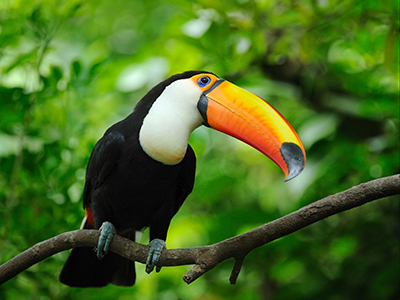
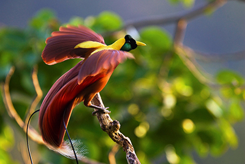
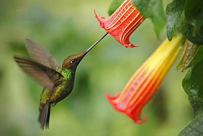

Toucan on a stick
Toucans are members of the Neotropical near passerine bird family Ramphastidae. The Ramphastidae are most
closely
related to the American barbets. They are brightly marked and have large, often-colorful bills. The family
includes
five genera and over forty different species.
Bird of paradise

Bird streching his wings
The birds-of-paradise are members of the family Paradisaeidae of the order Passeriformes. The majority of
species
are found in eastern Indonesia, Papua New Guinea, and eastern Australia. The family has 42 species in 15 genera.
Sword-billed hummingbird

Hummingbird dinner time
The sword-billed hummingbird is a neotropical species of hummingbird from the Andean regions of South America.
It is
the sole member of the genus Ensifera and is characterized by its unusually long bill; it is the only bird to
have a
beak longer than the rest of its body.